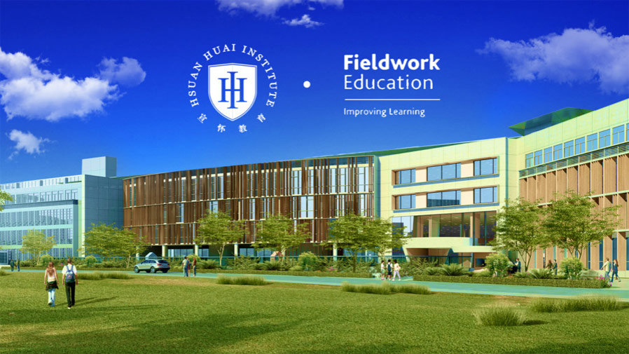
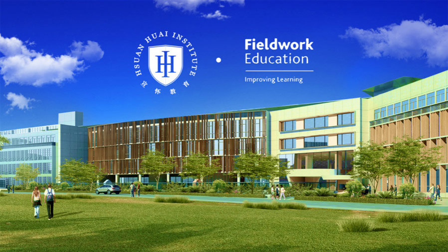

宣怀教育与 Fieldwork Education 正式签订合作协议，达成战略合作伙伴关系
日期：2018-08-31
2018年8月31日，宣怀教育与 Fieldwork Education 签订协议，成为 Fieldwork Education 正式授权的 IEYC 国际早幼教课程(International Early Year Curriculum)的学校举办者。
Fieldwork Education是诺德安达(Nord Anglia)国际教育集团旗下专注于提供世界领先的国际 K12课程的分支机构。IEYC 是 Fieldwork Education 根据英国政府颁布的早期基础教育(Early Years Foundation Stage)标准所开发的国际幼教课程，至今已被近五十个国家的超过140个高端幼教机构等所采用，并获得教育界和各国家长 的一致赞誉。  通过双方前期的深度交流，Fieldwork Education 团队高度认可宣怀教育的教育理念及发展目标。双方就中国早幼教的发展趋势达成了一致，确定了强强联手的合作规划。未来宣怀教育与 Fieldwork Education 将作为主要合作伙伴，结成长期、稳定、共赢的战略合作关系，按照优势互补、协同发展的原则，更好地整合行业资源，满足未来幼儿学习的多元需求，促进教育事业在中国的前进和升级。
宣怀教育成为 IEYC 国际早幼教课程的学校举办者后，不但获取了 Fieldwork Education 在幼教领域的全部课程以用于其幼儿园的全方位教学，也将获得 Fieldwork Education 对师资培育和教学质量保障上的各项持续支持，使宣怀教育旗下幼儿园可以借助这一高端教学体系迅速占据市场的制高点。Fieldwork Education 也将成为宣怀教育与世界顶级教育资源对接的开端，之后宣怀教育将与更多国际上的优质教育资源形成良性协作，结合本土特性，更好地推动中国幼儿教育的发展。
Fieldwork Education是诺德安达(Nord Anglia)国际教育集团旗下专注于提供世界领先的国际 K12课程的分支机构。IEYC 是 Fieldwork Education 根据英国政府颁布的早期基础教育(Early Years Foundation Stage)标准所开发的国际幼教课程，至今已被近五十个国家的超过140个高端幼教机构等所采用，并获得教育界和各国家长 的一致赞誉。  通过双方前期的深度交流，Fieldwork Education 团队高度认可宣怀教育的教育理念及发展目标。双方就中国早幼教的发展趋势达成了一致，确定了强强联手的合作规划。未来宣怀教育与 Fieldwork Education 将作为主要合作伙伴，结成长期、稳定、共赢的战略合作关系，按照优势互补、协同发展的原则，更好地整合行业资源，满足未来幼儿学习的多元需求，促进教育事业在中国的前进和升级。
宣怀教育成为 IEYC 国际早幼教课程的学校举办者后，不但获取了 Fieldwork Education 在幼教领域的全部课程以用于其幼儿园的全方位教学，也将获得 Fieldwork Education 对师资培育和教学质量保障上的各项持续支持，使宣怀教育旗下幼儿园可以借助这一高端教学体系迅速占据市场的制高点。Fieldwork Education 也将成为宣怀教育与世界顶级教育资源对接的开端，之后宣怀教育将与更多国际上的优质教育资源形成良性协作，结合本土特性，更好地推动中国幼儿教育的发展。